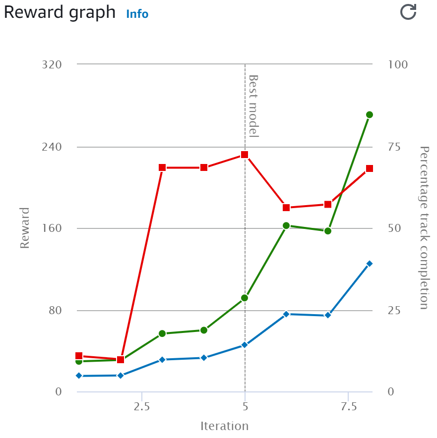
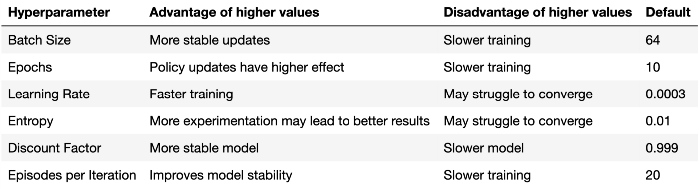
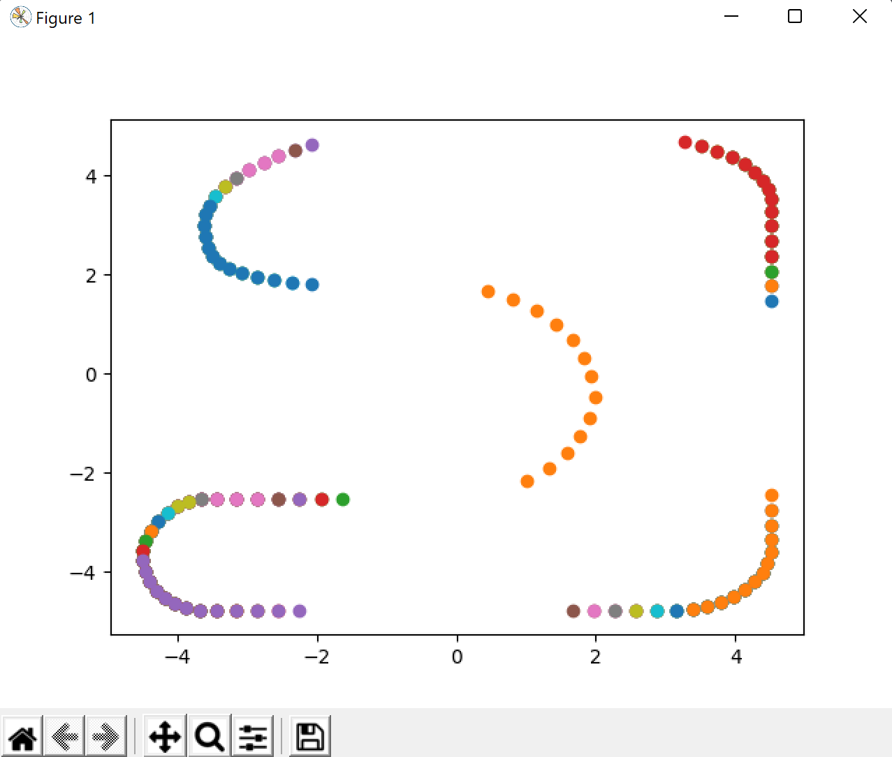

Links:
Report: https://www.overleaf.com/project/629e9c7db39fa9cc7b1c150b
Sweep data: Hyperparameter Sweeps
Slides: AWS DeepRacer
Findings:
- Need to penalize crashing much more than going fast.
- Simple reward functions seem to work best,
- Training on the oval track generalizes well to other (simple) tracks.
- Training for 30 minutes is enough to get an idea of how good the reward function is
- Depending on the reward function at the edge of the track, the agent will “suicide” it feels things are hopeless.
- What’s happening here, I think, is the agent is basically trying to minimize negative rewards, and the sure-fire way to do that is to end the simulation.
- I notice that PPO’s training stats all look pretty stable, whereas SAC’s oscillate crazy. PPO provides much better stability of training. See models https://us-east-1.console.aws.amazon.com/deepracer/home?region=us-east-1#model/0023d37a-4a76-4802-9517-249806e4b47f and https://us-east-1.console.aws.amazon.com/deepracer/home?region=us-east-1#model/00ea5f9e-b6e5-4ad2-ab85-a84832bbb225 are basically identical, with the main difference being PPO vs SAC. The difference in graphs is stark.
- Short-term reward don’t work well – the agent over-optimizes for them, losing sight of the long-term goal
Ideas to try:
- Penalize steering too much to prevent zig-zagging.
- Negatively reward for crashing, not for having a wheel off-track.
- At each point, only change one parameter of a successful model.
- Decrease discount to 0.995 or 0.997
- Use steps to make the agent finish faster
- Train another identical model to see how big of a role randomness plays in training – Not that big, see duplicate-first-try.
- Train an agent with max speed 2 for 2 hours, and another agent building up to max speed 2.
- I wonder if we should experiment with the discount factor. 0.997^300 = 0.4, 0.999^300 = 0.74. This is a huge difference (and for longer tracks with more than 300 steps -- even larger). Maybe I should train 3 agents -- with discounts 0.999, 0.997, 0.995 -- and identical otherwise. Say, for an hour with max speed 1.2 or something like that.
Lessons from blog posts:
- - increase the minimum speed to about 1. Limit max speed for high turning angles.
- - give very high reward for finishing the race (progress = 100)
- - keep reward between -1 and 1. They actually keep it between 0 and 1, giving 0 for off-track
- - split the reward function into multiple components: short term and long term rewards. Short term would be things like speed and whether we're facing towards the next waypoint. Long term would be making progress in few steps.
- - they don't just reward progress but fast progress, using steps.
Reward Function Ideas:
- Scale down the reward for completing the track by number of steps:
Y = 1 + (900/(steps + 1)))
- Y = 1 + 900/(steps^.4 + 1)
- Y = -.04*steps + 100
Leaderboard:
https://us-east-1.console.aws.amazon.com/deepracer/home?region=us-east-1#league/arn%3Aaws%3Adeepracer%3A%3A%3Aleaderboard%2Ff22b0ea7-2fc0-43fa-8da8-0b902d663ce9
Sweep
Model Naming: {dimension}-{value}, e.g. algo-PPO or reward-0-crash
Training: 60-120 minutes on Ross Raceway, evaluation on Invent:2018
Evaluation: prefer not crashing, and then completing track faster
Reward function: default from console
Action space: max 15 degrees turn
do parameter sweep on a good reward function with new initializations:
- (algo) PPO vs SAC – 120 minutes. PPO won.
- (action-space) discrete vs continuous – 60 minutes. Continuous won. Need another sweep here after picking reward and min-max speed + angle
- For the discrete space, have the max number of steps
- Note – look at what we have so far, potentially reuse trained models
- (max-speed) max speed: 1, 1.5, 2 – 60 minutes. 2 won
- (min-speed) min speed: 0.5, 0.7, 1 – 60 minutes. 1 won
- (reward) reward function:
- (0-1-crash) 0 or -1 for crashing – 60 minutes
- (center-line) follow centerline or not – 60 minutes
- reward actually completing the track
- (progress / 100)^2
- NEW IDEAS?
- learning rate: 0.0003, 0.0005, 0.001 – 60 minutes. 0.001 won
- Max-turning-angle: 30, 25, 20, 15. Whatever the sharpest turn is
- Limit speed at high angles, make speed finer at 0 angle. No
- discount factor sweep: 0.9, 0.99, 0.995, 0.997, 0.999, 0.9999 – 60 minutes. 0.999 seems best
At end, train a model with all of our best hyperparameters for like 10 hours
Parameters for Convergence:
- Discrete action space (only allowed in PPO)
- 15 degrees max turn angle seems to really help convergence
- Huber loss
Plan:
- Get the car to stay on track
- Increase max speed
- experiment with reward function to make it more efficient
Sweep Results
Min and Max Speed:
Hyperparameter Sweeps
Default Reward Function Experiment:
Trained 3 models using default reward functions, with a reduced action space, each for an hour:
- Zig Zag
- Center Line
- Inside Borders
The action space is DISCRETE, with 15 degree max steering angle
Note that none of these reward functions give reward for progress, so the model is not incentivized to be fast.
Presentation Ideas
Todo: get reimbursed
Motivation:
Self Driving is key for the future of…..
Problem Definition:
Get the car to drive fast and beat the competition
Approach:
When we started this project, we were focused on crafting a complex reward function that would give us a leg up on other racers. However, jumping straight into a complex reward function left us having difficulty converging etc…
Instead, hyper sweeps
Data:
Results from HP sweeps (tables in appendix, graphs in presentation and body of paper)
A couple training graphs from throughout the project
Results:
Leaderboard, maybe generalizability
Quick video of competition
Findings:
Be systematic
The most complex reward function/state space/etc is not always best
Reward shaping
Results
If green and blue match up, the reward function rewards good behavior.
(algo)
SAC

PPO:

Code snippets:
Computing radius of circle:
# Input 3 coords [[x1,y1],[x2,y2],[x3,y3]]
def circle_radius(coords):
# Flatten the list and assign to variables
x1, y1, x2, y2, x3, y3 = [i for sub in coords for i in sub]
a = x1*(y2-y3) - y1*(x2-x3) + x2*y3 - x3*y2
b = (x1**2+y1**2)*(y3-y2) + (x2**2+y2**2)*(y1-y3) + (x3**2+y3**2)*(y2-y1)
c = (x1**2+y1**2)*(x2-x3) + (x2**2+y2**2)*(x3-x1) + (x3**2+y3**2)*(x1-x2)
d = (x1**2+y1**2)*(x3*y2-x2*y3) + (x2**2+y2**2) * \
(x1*y3-x3*y1) + (x3**2+y3**2)*(x2*y1-x1*y2)
# In case a is zero (so radius is infinity)
try:
r = abs((b**2+c**2-4*a*d) / abs(4*a**2)) ** 0.5
except:
r = 999
return r
where alpha is the steering angle, r is the radius of fitted circle, and 𝐿=0.165𝑚 is the axle length.
Designing a reward function:
https://towardsdatascience.com/an-advanced-guide-to-aws-deepracer-2b462c37eea
Hyperparameters:

Ross Raceway:
steepest turn is 13 degrees
